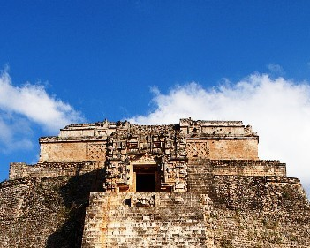
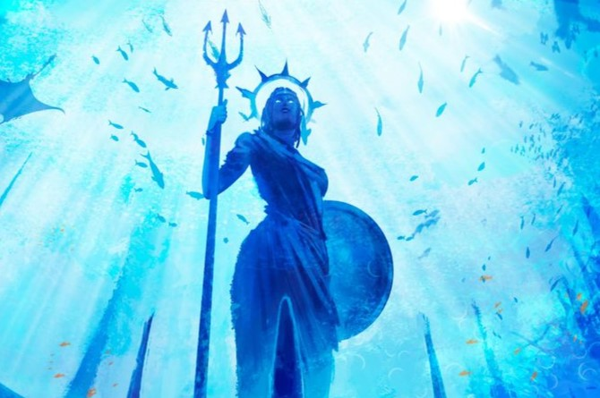

Üdvözöllek az oldalunkon!
Itt öt legendás civilizációról olvashatsz, melyek eltűntek, de a történelmük és a mítoszaik máig izgalmasak.
Az oldal története
Az oldalt egy programozási beadandó miatt csináltuk. Az eltűnt civilizációk többsége lehetséges hogy csak legenda, de ezt tudományos bizonyítékokkal még nem bizonyították be, úgyhogy ez sem tántorított el minket abban, hogy ezt a témát válasszuk mint ,,főfogás''.
Az oldal kinézetén kicsit vitatkoztunk, és pontosabb leírásokat nem könnyen találtunk, de mindent megpróbáltunk, hogy egy teljesen használható weboldalt készítsünk az embereknek.
Ki mit csinált az oldalon:
| Személy | Feladat |
|---|---|
| D. Roland | Főoldal, Lemuriaiak, Inkák |
| U. Zsolt | Atlantisziak, Maják, Aztékok |
Mik azok az eltűnt civilizációk?
Az elveszett civilizációk olyan egykori társadalmak vagy kultúrák, amelyek egykor virágoztak, jól megtudtak élni a főldjükön, de mára eltűntek, hanyatlottak, vagy nyomaik részben, vagy egészben feledésbe merültek. Ezek a civilizációk általában fenséges építményeket, lenyűgöző írásokat, és vallási rendszereket hagytak hátra, de sok esetben nem tudjuk pontosan, miért tűnhettek el.
Szerintem hallotál már több elveszett társadalomról is. Inkák, aztékok, húsvét sziget, s a többi, de még akkoriban azt is gondolhattad, hogy nem is létezhettek, de ha ez így lenne akkor az egyiptomiakról is mondhattuk volna, hogy: ,,Á... ez csak mese ki hinné azt, hogy ilyen magas piramisokat ilyen csont, és bőr rabszolgák építettek, ráadásúl aranyból.'', de mégsem mondjuk, mert volt rá bizonyíték a létezésükre.
Az elveszett civilizációkra is vannak amúgy bizonyítékok: nagy templomok, dicsőséges szobrok, régi papiruszokra vetett írások, s a többi, de sajnos nem annyi, hogy az alátámasztaná a létezésüket a elveszett civilizációknak, így az emberek (pontosabban a régeszek) minden nap kutatnak újjab nyomok után, hogy újra feltámasszák hamvjaikból ezen csodálatos helyek virágzó társadalmát.
Kis bevezetők arról, hogy mik várnak rád az oldalon:
1. Atlantisz népe, és élővilága:
Atlantisz egy legendás sziget, vagy kontinens, amely Platón szerint egy természeti katasztrófa következtében süllyedt el. Atlantisz lakói a legendák szerint egy rendkívül fejlett nép voltak, akik magas szintű tudással és technológiával rendelkeztek.
2. A maják:
A maják egy ősi amerikai népcsoportként Krisztus előtt 500 körül önálló városok emelésével, a mai Mexikó déli részén megjelenő sajátos etnikumot alkottak, mely egészen a 15. századig virágzó, fejlett civilizációt teremtett.
3. Az aszték birodalom:
Az aztékok indián törzse az amerikai kontinens egyik legkiterjedtebb bennszülött civilizációját hozta létre a 14–15. században.
4. Lemuria világa:
Lemuria egy ősi civilizáció, mely Atlantisz civilizációja előtt létezett. Úgy tartják, hogy fizikailag Észak-Amerika és Ázsia, vagy Ausztrália között volt található. Lemuriára hivatkoznak Mu néven is, vagy Motherland of Mu (Anyaföld) néven.
5. Az Inkák
Az Inka Birodalom alapvető társadalmi és gazdasági egysége a faluközösség volt, mely a földeket és az állatállományt közösen birtokolta. Az állam élén az inka állt, akit földre szállt istenségként tiszteltek.
Végszó a weboldal készítőtől:
Remélem, hogy az oldal elnyerte tetszésedet. Sokat dolgoztunk rajta a társammal, hogy elérjünk idáig. Azért mint egy diák annyit elmondok, hogy ha valami nem stimmel abban amit csinálsz, vagy nem tetszik neked akkor ne add fel, ne kezd újból, hanem próbáld megtalálni a hibát, és helyrehozni. Csak ennyit szerettem volna mondani. Akkor kellemes tudakozást, szép napot kívánok neked, és...
Jó szórakozást az oldalunkon!